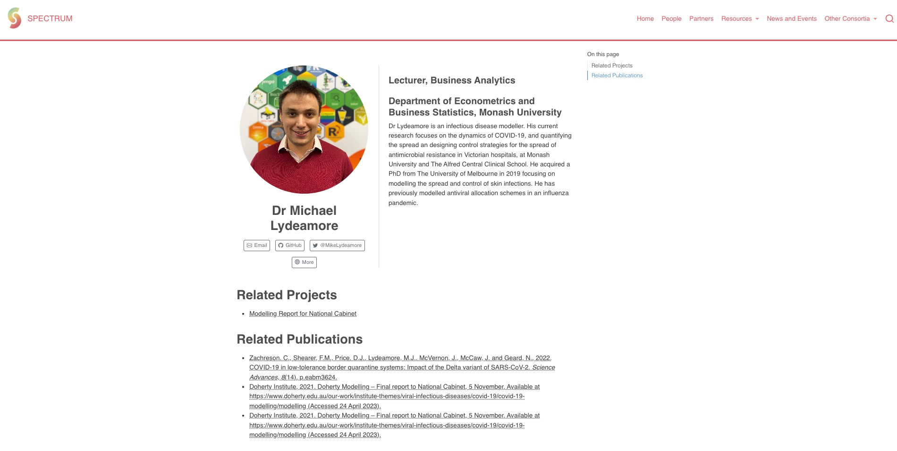

Everything needs a website. Products, startups, papers… as we all spend more and more of our lives online, the requirement to have a website only grows. I mean, this must be why Squarespace seems to sponsor every second YouTube and podcast creator!
But, building a website is a pain. Despite the myriad of tools available to try and make it easier. The internet is littered with no longer maintained websites, started by people with the best of intentions. Perhaps this is because it turns out to be far more work than expected, perhaps it’s because the money has run out to pay someone to maintain it.
Quarto, our saviour.
Enter Quarto. On it’s very front page, it promises to “publish reprocucible, production quality websites”. Sounds like the dream! And to an extent, it is. With three small commands (or one button push in RStudio), anyone can have a nice looking website ready to go.
The challenge, then, is taking the ‘reprocubility’ and ‘automation’ aims of Quarto to the next level for producing websites. Traditional content management systems (CMSs) have a powerful database architechture, that when paired with a nice front-end, let people upload and cross-link content across the website quickly and easily.
No such system exists for a Quarto website. This is perhaps fine for a small blog or a website with only a handful of interconnected components, but rapidly gets out of hand for even small scale linking.
Where this is no solution, a solution is needed
This was the motivation behind creating condensr, a package that comes close to an in-memory database and will automagically cross-link people with their projects and publications, with some nice in-built styling.
Users can specify staff members, their projects and their publications, and all is output in a nice, consistent and cross-linked format.
For example, here is a screenshot of the SPECTRUM website, which is using a condensr system to generate it’s pages:

Publications automatically appear below staff pages, as do projects, and a short description of the staff member.
The condensr data structure
The package let’s users sort out their own data storage system. For very small projects, you can even code these directly in R, since all the package wants is objects of class staff_member, project and publication respectively, each of which has their own constructors.
As an example, below is the code that is produced by condensr::create_website:
This code chunk is long, so click here to see it
library(condensr)staff_list <-list("joe-bloggs"=staff_member(id ="joe-bloggs",name ="Joe Bloggs",description ="Joe is a Dr of Blogging.",external_link ="https://www.example.com/" ))publication_list <-list(publication(title ="Joe's Blogging Paper",related_staff =c("joe-bloggs"),link =NA,citation ="Bloggs, J., Bloggy, Y. (2019), The power of blogging, Australian Journal of Bloggs, 43: 149-155.",date =as.Date("2019-01-01") ))# Sort the publications by their datepublication_list <-sort_list_by_date(publication_list)project_list <-list(project(id ="joes-model",name ="Joe's Blogging Model",related_staff ="joe-bloggs" ))
You could expand this list to be as long as you like.
For medium sized pursuits, I think this would get out of hand pretty quickly. For the two websites I’ve built during this package development, all the data is contained in two Google sheets, and a shared drive for the photos. You can see the source code for those on GitHub.
The web is not one-size-fits-all
This package will be useful for a bunch of small groups to build websites quickly. But, it isn’t a fully featured CMS, and doesn’t pretend to be. If you have a big group, a lot of content, or will be around for a long time, then I would say look elsewhere.
But, if you want to knock up a website that looks pretty good, pretty quickly, and will allow you to keep your presence up to date with news, publications and new staff, then check out condensr, it might just serve your needs.